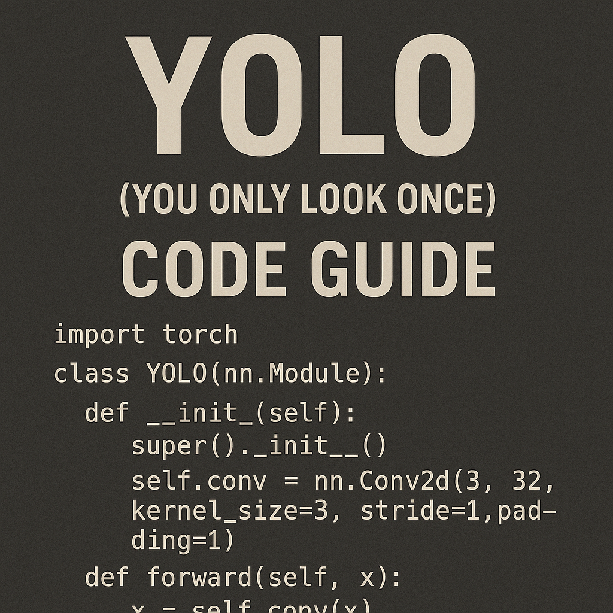

Complete YOLO Object Detection Code Guide

1. Introduction to YOLO
YOLO (You Only Look Once) is a state-of-the-art real-time object detection algorithm that revolutionized computer vision by treating object detection as a single regression problem. Unlike traditional methods that apply classifiers to different parts of an image, YOLO looks at the entire image once and predicts bounding boxes and class probabilities directly.
Key Advantages:
- Speed: Real-time detection (30+ FPS)
- Global Context: Sees entire image during training and testing
- Unified Architecture: Single neural network for end-to-end training
- Versatility: Works well across different object types
YOLO Evolution:
- YOLOv1 (2016): Original paper, 45 FPS
- YOLOv2/YOLO9000 (2016): Better accuracy, 40+ FPS
- YOLOv3 (2018): Multi-scale detection, Darknet-53
- YOLOv4 (2020): Improved accuracy and speed
- YOLOv5 (2020): PyTorch implementation, user-friendly
- YOLOv8 (2023): Latest Ultralytics version, best performance
2. YOLO Architecture Overview
Core Concept
YOLO divides an image into an S×S grid. Each grid cell predicts: - B bounding boxes (x, y, width, height, confidence) - C class probabilities
Network Architecture (YOLOv8)
Input Image (640×640×3)
↓
Backbone (CSPDarknet53)
↓
Neck (PANet)
↓
Head (Detection layers)
↓
Output (Predictions)Loss Function Components:
- Localization Loss: Bounding box coordinate errors
- Confidence Loss: Object presence confidence
- Classification Loss: Class prediction errors
3. Setting Up the Environment
Prerequisites
# Python 3.8+
python --version
# Create virtual environment
python -m venv yolo_env
source yolo_env/bin/activate # Linux/Mac
# or
yolo_env\Scripts\activate # WindowsInstall Dependencies
# Install PyTorch (check pytorch.org for your system)
pip install torch torchvision torchaudio
# Install Ultralytics YOLOv8
pip install ultralytics
# Additional dependencies
pip install opencv-python pillow matplotlib numpy pandas
pip install jupyter notebook # For interactive developmentVerify Installation
import torch
import ultralytics
from ultralytics import YOLO
import cv2
import numpy as np
print(f"PyTorch version: {torch.__version__}")
print(f"CUDA available: {torch.cuda.is_available()}")
print(f"Ultralytics version: {ultralytics.__version__}")4. YOLOv8 Implementation
Basic Object Detection
from ultralytics import YOLO
import cv2
import matplotlib.pyplot as plt
# Load pre-trained model
model = YOLO('yolov8n.pt') # nano version for speed
# model = YOLO('yolov8s.pt') # small
# model = YOLO('yolov8m.pt') # medium
# model = YOLO('yolov8l.pt') # large
# model = YOLO('yolov8x.pt') # extra large
# Single image inference
def detect_objects(image_path):
"""
Detect objects in a single image
"""
results = model(image_path)
# Process results
for result in results:
# Get bounding boxes, confidence scores, and class IDs
boxes = result.boxes.xyxy.cpu().numpy() # x1, y1, x2, y2
confidences = result.boxes.conf.cpu().numpy()
class_ids = result.boxes.cls.cpu().numpy()
# Load image
img = cv2.imread(image_path)
img_rgb = cv2.cvtColor(img, cv2.COLOR_BGR2RGB)
# Draw bounding boxes
for i, (box, conf, cls_id) in enumerate(zip(boxes, confidences, class_ids)):
x1, y1, x2, y2 = map(int, box)
class_name = model.names[int(cls_id)]
# Draw rectangle and label
cv2.rectangle(img_rgb, (x1, y1), (x2, y2), (0, 255, 0), 2)
cv2.putText(img_rgb, f'{class_name}: {conf:.2f}',
(x1, y1-10), cv2.FONT_HERSHEY_SIMPLEX, 0.5, (0, 255, 0), 2)
return img_rgb, results
# Example usage
image_path = 'path/to/your/image.jpg'
detected_img, results = detect_objects(image_path)
# Display results
plt.figure(figsize=(12, 8))
plt.imshow(detected_img)
plt.axis('off')
plt.title('YOLO Object Detection Results')
plt.show()Video Processing
def process_video(video_path, output_path=None):
"""
Process video for object detection
"""
cap = cv2.VideoCapture(video_path)
# Get video properties
fps = int(cap.get(cv2.CAP_PROP_FPS))
width = int(cap.get(cv2.CAP_PROP_FRAME_WIDTH))
height = int(cap.get(cv2.CAP_PROP_FRAME_HEIGHT))
# Setup video writer if output path provided
if output_path:
fourcc = cv2.VideoWriter_fourcc(*'mp4v')
out = cv2.VideoWriter(output_path, fourcc, fps, (width, height))
while True:
ret, frame = cap.read()
if not ret:
break
# Run YOLO detection
results = model(frame)
# Draw results on frame
annotated_frame = results[0].plot()
# Save or display frame
if output_path:
out.write(annotated_frame)
else:
cv2.imshow('YOLO Detection', annotated_frame)
if cv2.waitKey(1) & 0xFF == ord('q'):
break
cap.release()
if output_path:
out.release()
cv2.destroyAllWindows()
# Example usage
process_video('input_video.mp4', 'output_video.mp4')Real-time Webcam Detection
def real_time_detection():
"""
Real-time object detection from webcam
"""
cap = cv2.VideoCapture(0) # Use 0 for default camera
while True:
ret, frame = cap.read()
if not ret:
break
# Run YOLO detection
results = model(frame)
# Draw results
annotated_frame = results[0].plot()
# Display frame
cv2.imshow('Real-time YOLO Detection', annotated_frame)
# Exit on 'q' key press
if cv2.waitKey(1) & 0xFF == ord('q'):
break
cap.release()
cv2.destroyAllWindows()
# Start real-time detection
real_time_detection()5. Custom Dataset Training
Dataset Preparation
import os
import shutil
from pathlib import Path
def create_dataset_structure(base_path):
"""
Create YOLO dataset structure
"""
paths = [
'train/images',
'train/labels',
'val/images',
'val/labels',
'test/images',
'test/labels'
]
for path in paths:
Path(base_path / path).mkdir(parents=True, exist_ok=True)
print(f"Dataset structure created at {base_path}")
# Create dataset structure
dataset_path = Path('custom_dataset')
create_dataset_structure(dataset_path)Data Configuration File
# data.yaml
train: ../custom_dataset/train/images
val: ../custom_dataset/val/images
test: ../custom_dataset/test/images
nc: 3 # number of classes
names: ['person', 'car', 'bicycle'] # class namesTraining Script
from ultralytics import YOLO
import torch
def train_custom_model():
"""
Train YOLO model on custom dataset
"""
# Load a pre-trained model
model = YOLO('yolov8n.pt')
# Train the model
results = model.train(
data='data.yaml', # dataset config file
epochs=100, # number of training epochs
imgsz=640, # image size
batch_size=16, # batch size
device='cuda' if torch.cuda.is_available() else 'cpu',
workers=4, # number of data loader workers
project='runs/train', # project directory
name='custom_model', # experiment name
save=True, # save model checkpoints
save_period=10, # save checkpoint every N epochs
cache=True, # cache images for faster training
augment=True, # use data augmentation
lr0=0.01, # initial learning rate
weight_decay=0.0005, # weight decay
warmup_epochs=3, # warmup epochs
patience=50, # early stopping patience
verbose=True # verbose output
)
return results
# Start training
if __name__ == "__main__":
results = train_custom_model()
print("Training completed!")Data Augmentation
# Custom augmentation configuration
augmentation_config = {
'hsv_h': 0.015, # HSV-Hue augmentation
'hsv_s': 0.7, # HSV-Saturation augmentation
'hsv_v': 0.4, # HSV-Value augmentation
'degrees': 10.0, # rotation degrees
'translate': 0.1, # translation
'scale': 0.5, # scale
'shear': 2.0, # shear degrees
'perspective': 0.0, # perspective
'flipud': 0.0, # flip up-down probability
'fliplr': 0.5, # flip left-right probability
'mosaic': 1.0, # mosaic probability
'mixup': 0.1, # mixup probability
'copy_paste': 0.1 # copy-paste probability
}6. Advanced Features
Model Validation and Metrics
def validate_model(model_path, data_config):
"""
Validate trained model and get metrics
"""
model = YOLO(model_path)
# Validate the model
results = model.val(
data=data_config,
imgsz=640,
batch_size=16,
device='cuda' if torch.cuda.is_available() else 'cpu',
plots=True,
save_json=True
)
# Print metrics
print(f"mAP50: {results.box.map50:.4f}")
print(f"mAP50-95: {results.box.map:.4f}")
print(f"Precision: {results.box.mp:.4f}")
print(f"Recall: {results.box.mr:.4f}")
return results
# Validate model
validation_results = validate_model('runs/train/custom_model/weights/best.pt', 'data.yaml')Model Export and Optimization
def export_model(model_path, export_format='onnx'):
"""
Export model to different formats
"""
model = YOLO(model_path)
# Export options
export_formats = {
'onnx': model.export(format='onnx'),
'torchscript': model.export(format='torchscript'),
'tflite': model.export(format='tflite'),
'tensorrt': model.export(format='engine'), # TensorRT
'openvino': model.export(format='openvino'),
'coreml': model.export(format='coreml')
}
return export_formats[export_format]
# Export to ONNX
onnx_model = export_model('runs/train/custom_model/weights/best.pt', 'onnx')Hyperparameter Tuning
def hyperparameter_tuning():
"""
Automated hyperparameter tuning
"""
model = YOLO('yolov8n.pt')
# Tune hyperparameters
model.tune(
data='data.yaml',
epochs=30,
iterations=300,
optimizer='AdamW',
plots=True,
save=True
)
# Run hyperparameter tuning
hyperparameter_tuning()7. Performance Optimization
Multi-GPU Training
def multi_gpu_training():
"""
Training with multiple GPUs
"""
if torch.cuda.device_count() > 1:
model = YOLO('yolov8n.pt')
# Multi-GPU training
results = model.train(
data='data.yaml',
epochs=100,
imgsz=640,
batch_size=32, # Increase batch size for multi-GPU
device='0,1,2,3', # Specify GPU IDs
workers=8
)
else:
print("Multiple GPUs not available")
multi_gpu_training()Inference Optimization
import time
import numpy as np
def benchmark_model(model_path, test_images):
"""
Benchmark model performance
"""
model = YOLO(model_path)
# Warm up
for _ in range(10):
model('path/to/test/image.jpg')
# Benchmark
times = []
for image_path in test_images:
start_time = time.time()
results = model(image_path)
end_time = time.time()
times.append(end_time - start_time)
avg_time = np.mean(times)
fps = 1 / avg_time
print(f"Average inference time: {avg_time:.4f} seconds")
print(f"FPS: {fps:.2f}")
return avg_time, fps
# Benchmark your model
test_images = ['test1.jpg', 'test2.jpg', 'test3.jpg']
avg_time, fps = benchmark_model('yolov8n.pt', test_images)Memory Optimization
def memory_efficient_inference(model_path, image_path):
"""
Memory efficient inference for large images
"""
model = YOLO(model_path)
# Process image in tiles for large images
def process_large_image(image_path, tile_size=640, overlap=0.1):
img = cv2.imread(image_path)
h, w = img.shape[:2]
if h <= tile_size and w <= tile_size:
# Small image, process normally
return model(img)
# Split into tiles
results = []
step = int(tile_size * (1 - overlap))
for y in range(0, h, step):
for x in range(0, w, step):
# Extract tile
tile = img[y:y+tile_size, x:x+tile_size]
# Process tile
tile_results = model(tile)
# Adjust coordinates
for result in tile_results:
if result.boxes is not None:
result.boxes.xyxy[:, [0, 2]] += x
result.boxes.xyxy[:, [1, 3]] += y
results.extend(tile_results)
return results
return process_large_image(image_path)
# Process large image
large_image_results = memory_efficient_inference('yolov8n.pt', 'large_image.jpg')8. Real-world Applications
Security Camera System
class SecuritySystem:
def __init__(self, model_path, camera_sources):
self.model = YOLO(model_path)
self.cameras = camera_sources
self.alerts = []
def monitor_cameras(self):
"""
Monitor multiple camera feeds
"""
for camera_id, source in self.cameras.items():
cap = cv2.VideoCapture(source)
while True:
ret, frame = cap.read()
if not ret:
break
# Detect objects
results = self.model(frame)
# Check for specific objects (e.g., person)
for result in results:
if result.boxes is not None:
classes = result.boxes.cls.cpu().numpy()
if 0 in classes: # Person detected
self.trigger_alert(camera_id, frame)
# Display frame
annotated_frame = results[0].plot()
cv2.imshow(f'Camera {camera_id}', annotated_frame)
if cv2.waitKey(1) & 0xFF == ord('q'):
break
cap.release()
cv2.destroyAllWindows()
def trigger_alert(self, camera_id, frame):
"""
Trigger security alert
"""
timestamp = time.strftime("%Y-%m-%d %H:%M:%S")
alert = {
'camera_id': camera_id,
'timestamp': timestamp,
'frame': frame
}
self.alerts.append(alert)
print(f"ALERT: Person detected on Camera {camera_id} at {timestamp}")
# Setup security system
cameras = {
'cam1': 0, # Webcam
'cam2': 'rtsp://camera2/stream', # IP camera
}
security = SecuritySystem('yolov8n.pt', cameras)Traffic Monitoring
class TrafficMonitor:
def __init__(self, model_path):
self.model = YOLO(model_path)
self.vehicle_count = 0
self.speed_violations = []
def analyze_traffic(self, video_path):
"""
Analyze traffic from video feed
"""
cap = cv2.VideoCapture(video_path)
while True:
ret, frame = cap.read()
if not ret:
break
# Detect vehicles
results = self.model(frame)
# Count vehicles
vehicle_classes = [2, 3, 5, 7] # car, motorcycle, bus, truck
current_vehicles = 0
for result in results:
if result.boxes is not None:
classes = result.boxes.cls.cpu().numpy()
current_vehicles += sum(1 for cls in classes if cls in vehicle_classes)
self.vehicle_count = max(self.vehicle_count, current_vehicles)
# Display results
annotated_frame = results[0].plot()
cv2.putText(annotated_frame, f'Vehicles: {current_vehicles}',
(10, 30), cv2.FONT_HERSHEY_SIMPLEX, 1, (0, 255, 0), 2)
cv2.imshow('Traffic Monitor', annotated_frame)
if cv2.waitKey(1) & 0xFF == ord('q'):
break
cap.release()
cv2.destroyAllWindows()
print(f"Maximum vehicles detected: {self.vehicle_count}")
# Monitor traffic
traffic_monitor = TrafficMonitor('yolov8n.pt')
traffic_monitor.analyze_traffic('traffic_video.mp4')Quality Control System
class QualityControl:
def __init__(self, model_path):
self.model = YOLO(model_path)
self.defect_log = []
def inspect_products(self, image_paths):
"""
Inspect products for defects
"""
for image_path in image_paths:
results = self.model(image_path)
# Analyze results for defects
defects_found = []
for result in results:
if result.boxes is not None:
classes = result.boxes.cls.cpu().numpy()
confidences = result.boxes.conf.cpu().numpy()
for cls, conf in zip(classes, confidences):
if conf > 0.5: # Confidence threshold
defect_type = self.model.names[int(cls)]
defects_found.append(defect_type)
# Log results
inspection_result = {
'image': image_path,
'defects': defects_found,
'status': 'FAIL' if defects_found else 'PASS',
'timestamp': time.strftime("%Y-%m-%d %H:%M:%S")
}
self.defect_log.append(inspection_result)
print(f"Inspected {image_path}: {inspection_result['status']}")
return self.defect_log
# Quality control inspection
qc = QualityControl('custom_defect_model.pt')
product_images = ['product1.jpg', 'product2.jpg', 'product3.jpg']
inspection_results = qc.inspect_products(product_images)Best Practices and Tips
Performance Tips
- Choose the right model size: Use YOLOv8n for speed, YOLOv8x for accuracy
- Optimize image size: Use 640x640 for balance, smaller for speed
- Use appropriate batch size: Maximize GPU utilization
- Enable model compilation: Use TorchScript or TensorRT for production
- Implement model caching: Load models once and reuse
Training Tips
- Data quality over quantity: Focus on high-quality, diverse training data
- Proper data augmentation: Use appropriate augmentations for your domain
- Monitor training metrics: Watch for overfitting and adjust accordingly
- Use transfer learning: Start with pre-trained weights
- Regular validation: Validate on held-out data during training
Deployment Tips
- Model versioning: Keep track of model versions and performance
- A/B testing: Test different models in production
- Monitoring: Track inference time and accuracy in production
- Fallback mechanisms: Have backup models for critical applications
- Documentation: Document model performance and limitations
This comprehensive guide covers the essential aspects of working with YOLO for object detection. Start with the basic implementations and gradually explore advanced features as your needs grow. Remember to always validate your models thoroughly before deploying them in production environments.